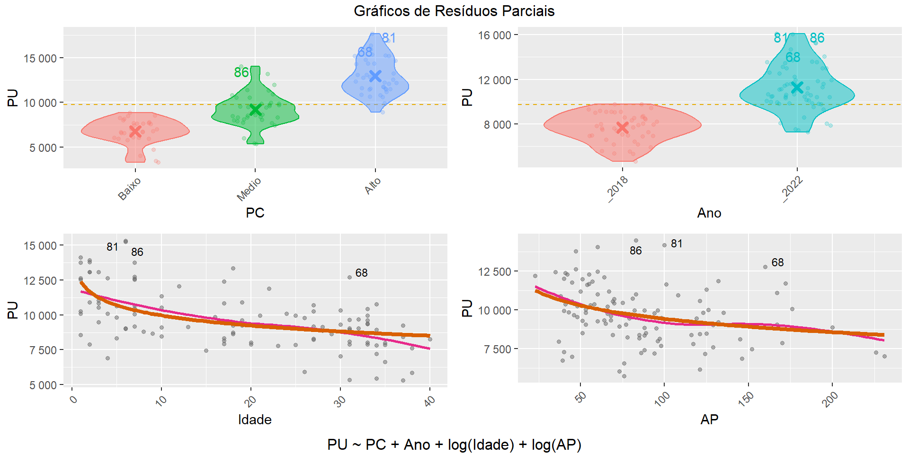
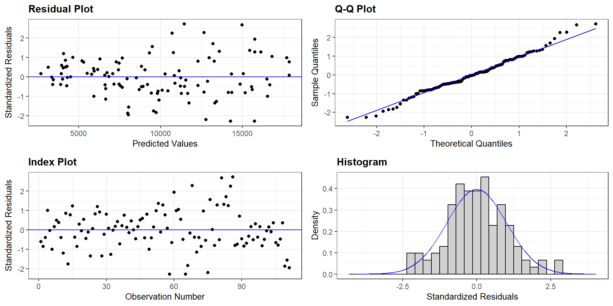
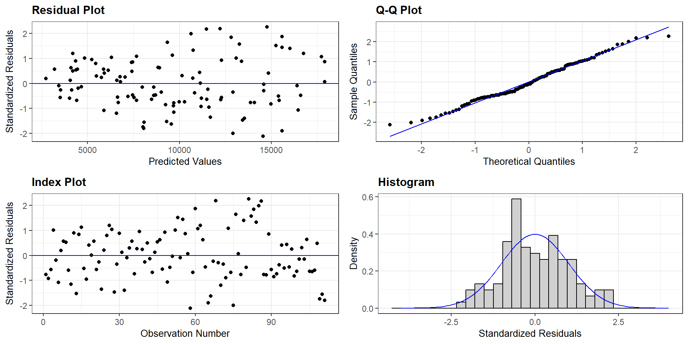

| PT | PU | AP | PC | Idade | Ano | Vagas | Suites | DBM |
|---|---|---|---|---|---|---|---|---|
| 497.080,8 | 5.585,18 | 89 | Medio | 17 | _2018 | 1 | 1 | 685,00 |
| 675.000,0 | 9.782,61 | 69 | Alto | 10 | _2018 | 2 | 1 | 412,36 |
| 260.100,0 | 2.737,89 | 95 | Baixo | 33 | _2018 | 1 | 1 | 1.306,25 |
| 269.910,0 | 6.426,43 | 42 | Baixo | 27 | _2018 | 1 | 0 | 925,64 |
| 315.000,0 | 4.256,76 | 74 | Baixo | 19 | _2018 | 1 | 0 | 1.341,19 |
| 405.000,0 | 11.911,76 | 34 | Baixo | 15 | _2018 | 1 | 0 | 343,16 |
| 409.500,0 | 4.178,57 | 98 | Medio | 30 | _2018 | 1 | 1 | 1.239,75 |
| 495.000,0 | 2.964,07 | 167 | Baixo | 34 | _2018 | 1 | 2 | 700,60 |
| 504.000,0 | 4.000,00 | 126 | Baixo | 31 | _2018 | 1 | 1 | 1.172,53 |
| 513.000,0 | 6.840,00 | 75 | Medio | 33 | _2018 | 1 | 2 | 83,95 |
| 247.500,0 | 3.214,29 | 77 | Baixo | 27 | _2018 | 0 | 0 | 1.203,46 |
| 1.143.000,0 | 7.828,77 | 146 | Alto | 15 | _2018 | 2 | 1 | 63,89 |
| 315.000,0 | 5.727,27 | 55 | Baixo | 30 | _2018 | 1 | 0 | 823,83 |
| 792.000,0 | 6.545,45 | 121 | Alto | 26 | _2018 | 1 | 1 | 279,74 |
| 1.174.509,0 | 15.454,07 | 76 | Medio | 6 | _2018 | 1 | 1 | 115,80 |
Curso de Fatores
Fatores Aditivos Fundamentados
Luiz Droubi
Academia da Engenharia de Avaliações
23 de julho de 2025
Fatores Aditivos
Introdução
- Os fatores multiplicativos derivam de um modelo multiplicativo
- \(\widehat{PU} = \exp(\hat\beta_0).\exp(\hat\beta_1)^{X_1}\cdot\ldots\cdot\exp(\hat\beta_k)^{X_k}\)
- Da mesma maneira, os fatores aditivos, devem ser derivados de um modelo aditivo
- \(\widehat{PU} = \hat\beta_0 + \hat\beta_1X_1 + \ldots + \hat\beta_kX_k\)
- Apesar dos erros no mercado imobiliário dificilmente aparecerem na forma aditiva
- Não podemos sustentar que nenhum mercado imobiliário apresentam erros multiplicativos
- Ainda, existem técnicas que permitem o ajustamento de modelos com erros não-constantes
Introdução
- Trabalhar na escala original (PU) tem algumas vantagens
- Ausência de distorções devido às transformações
- Desnecessidade de retransformação da variável
- Facilidade de interpretação dos coeficientes
Derivação de Fatores Aditivos
Como bem observou Lima (2006), se na avaliação por fatores aditivos, temos:
- \[\widehat{PU}_i = \overline{PU}_{hom}.[1 + (F_{1i}-1) + (F_{2i}-1) + \ldots + (F_{ki}-1)]\]
E na avaliação por regressão múltipla, temos:
- \[\widehat{PU}_i = \hat{\beta_0}.+ \hat{\beta_1}X_{1i} + \hat{\beta_2}X_{2i} + \ldots + \hat{\beta_k}X_{ki}\]
\[\therefore \left\{\begin{matrix} \hat\beta_0 = \overline{PU}_{hom} \\ F_{1i}=\hat{\beta_1}/\hat{\beta_0}.X_{1i} \\ F_{2i}=\hat{\beta_2}/\hat{\beta_0}.X_{2i} \\ \cdots \\ F_{ki}=\hat{\beta_k}/\hat{\beta_0}.X_{ki} \end{matrix}\right.\]
Porém, quem disse que \(\hat\beta_0 = \overline{PU}_{hom}\)?
Derivação de Fatores Aditivos
- \(\hat\beta_0 = \overline{PU}_{hom}\Leftrightarrow\) as variáveis explicativas estiverem centralizadas!
Exemplo
Dados
Modelo Aditivo
IC (80%)
|
||||||
|---|---|---|---|---|---|---|
| Termo | Est. | Erro | Est. t | p-valor | Inf. | Sup. |
| (Intercept) | 12.792,55 | 1.708,38 | 7,49 | 0,00 | 10.589,32 | 14.995,79 |
| PCMedio | 2.446,29 | 518,66 | 4,72 | 0,00 | 1.777,40 | 3.115,19 |
| PCAlto | 6.194,09 | 652,25 | 9,50 | 0,00 | 5.352,91 | 7.035,27 |
| Ano_2022 | 3.615,43 | 357,41 | 10,12 | 0,00 | 3.154,49 | 4.076,36 |
| log(Idade) | -1.057,00 | 234,69 | -4,50 | 0,00 | -1.359,67 | -754,33 |
| log(AP) | -1.245,31 | 439,01 | -2,84 | 0,01 | -1.811,48 | -679,14 |
| a Dados: 111 | ||||||
| b R2: 0,84 | ||||||
| c R2aj: 0,84 | ||||||
Gráficos do Modelo
Diagnóstico do Modelo
Modelo Aditivo Ponderado
- Aplicando pesos para um melhor ajuste:
IC (80%)
|
||||||
|---|---|---|---|---|---|---|
| Termo | Est. | Erro | Est. t | p-valor | Inf. | Sup. |
| (Intercept) | 13.640,28 | 1.428,26 | 9,55 | 0 | 11.798,30 | 15.482,26 |
| PCMedio | 2.308,43 | 411,96 | 5,60 | 0 | 1.777,13 | 2.839,73 |
| PCAlto | 5.842,87 | 547,35 | 10,67 | 0 | 5.136,97 | 6.548,77 |
| Ano_2022 | 3.486,96 | 294,10 | 11,86 | 0 | 3.107,67 | 3.866,25 |
| log(Idade) | -1.165,63 | 203,11 | -5,74 | 0 | -1.427,58 | -903,69 |
| log(AP) | -1.329,49 | 360,22 | -3,69 | 0 | -1.794,05 | -864,93 |
| a Dados: 111 | ||||||
| b R2: 0,89 | ||||||
| c R2aj: 0,88 | ||||||
- Observe-se a melhora no \(R^2\)!
Diagnóstico do Modelo Aditivo Ponderado
- Melhor pero no mucho!
- Aceitável!
Modelo Aditivo Ponderado Centralizado
IC (80%)
|
||||||
|---|---|---|---|---|---|---|
| Termo | Est. | Erro | Est. t | p-valor | Inf. | Sup. |
| (Intercept) | 4.833,79 | 413,56 | 11,69 | 0 | 4.300,44 | 5.367,14 |
| PCMedio | 2.308,43 | 411,96 | 5,60 | 0 | 1.777,13 | 2.839,73 |
| PCAlto | 5.842,87 | 547,35 | 10,67 | 0 | 5.136,97 | 6.548,77 |
| Ano_2022 | 3.486,96 | 294,10 | 11,86 | 0 | 3.107,67 | 3.866,25 |
| log(Idade/10) | -1.165,63 | 203,11 | -5,74 | 0 | -1.427,58 | -903,69 |
| log(AP/100) | -1.329,49 | 360,22 | -3,69 | 0 | -1.794,05 | -864,93 |
| a Dados: 111 | ||||||
| b R2: 0,89 | ||||||
| c R2aj: 0,88 | ||||||
Interpretação das variáveis
- Para uma derivação formal dos fatores, podem ser utilizadas as derivadas parciais da equação de regressão em relação a cada termo.
- \[\begin{aligned}
PU = 4.833,8 + 2.0308,4\cdot PCMedio + 5.842,9\cdot PCAlto + \\
3.487,0\cdot Ano2022 - 1.065,6\cdot\ln(Idade/10) - 1.329,5\cdot\ln(AP/100)
\end{aligned}\]
- \(\overline{PU}_{Hom} = 4.833,80\)
- Para a variável
Ano:- \[\frac{\partial PU(PC, Ano, Idade, AP)}{\partial \text{Ano}} = \frac{\partial 3.487,0.\text{Ano}}{\partial \text{Ano}} = 3.487\]
- \(\therefore \delta PU = 3.039.\delta Ano\)
- Ou seja: se a var. \(Ano\) passa de 2018 (nível de referência) para 2022, então o PU aumenta em R$ 3.478,0\(/m^2\).
Interpretação das variáveis (2)
- Para a variável
Idade: \[\frac{\partial PU(PC, Ano, Idade, AP)}{\partial \text{Idade}} = \frac{\partial\,-1.065,6\cdot\ln(Idade/10)}{\partial \text{Idade}}= - \frac{1.065,6}{Idade}\]- \(\therefore \delta PU = -135,20.\delta Idade\)
- Ou seja, se a Idade do avaliando varia 1 ano, para 11 anos (\(\delta Idade = 1\)), então \(\delta{PU} \approx -\frac{-1.065,6}{10}\cdot 11 = + \text{ R\$ } -1.065,6/m^2\)
- Deve-se reparar que a derivada muda em função da idade
- De 11 para 12 anos a variação será menor!
- Deve-se reparar que a derivada muda em função da idade
- Ou seja, o impacto da variável Idade é não-linear
- A únida maneira de se ajustar um fator é através da transformação \(\ln\)
Interpretação das variáveis (3)
Para a variável
Area:\[\frac{\partial PU(PC, Ano, Idade, AP)}{\partial AP} = \frac{\partial -1.329,50\cdot \ln(AP/100)}{\partial AP}\]
\[\frac{\partial PU}{\partial AP} = -\frac{1.329,50}{(AP)}\]
O aumento de 1% em
APcorresponde a uma diminuição de \(\approx\text {R\$ } 13,29/m^2\)Cuidado: a interpretação acima vale para pequenos percentuais de variação!
O fator área deve ser calculado: \(F_{Area} = -1.329,5.\ln(Area/100)\)
Por exemplo: para um imóvel com área igual a 150 \(m^2\):
\(F_{Area} = - 1.329,5.\ln(150/100) \approx -539,0 \text{ R\$}/m^2\)
Não é possível utilizar fatores do tipo: \(\left(\frac{X_{imóvel}}{X_{paradigma}}\right)^\alpha\) de forma aditiva
Derivação de Fatores Aditivos
Com o método de Lima (2006) ajustado
- Fator Padrão Construtivo:
- \[F_{PC} = \begin{cases} 4.833,8/4.833,8 = 1,00 & \text{ se } PC=Baixo \\ (4.833,8 + 2.308,4)/4.833,8 = 1,48 & \text{ se } PC=Medio \\ (4.833,8 + 5.842,9)/4.833,8 = 2,21 & \text{ se } PC=Alto \end{cases} \]
- Fator Ano:
- \[F_{Ano} = \begin{cases} 4.833,8/4.833,8 = 1,00 & \text{ se } Ano = 2018\\ (4.833,8 + 3.487,0)/4.833,8 = 1,72 & \text{ se } Ano = 2022 \end{cases}\]
Derivação de Fatores Aditivos
Com o método de Lima (2006) ajustado
- Fator AP:
- \(F_{AP} = \frac{\beta_{AP}}{\beta_0}.\ln(AP_{i}/AP_{p}) + 1\)
- \(F_{AP} = \frac{-1.329,5}{4.833,8}.\ln(AP_{i}/100) + 1\)
- \(F_{AP} = -0,275.\ln(AP_{i}/100) + 1\)
- Fator Idade:
- \(F_{\text{Idade}} = \frac{\beta_{Idade}}{\beta_0}.\ln(\text{Idade}_{i}/\text{Idade}_{p}) + 1\)
- \(F_{\text{Idade}} = \frac{-1.165,6}{4.833,8}.\ln(\text{Idade}_{i}/10) + 1\)
- \(F_{\text{Idade}} = -0,24.\ln(\text{Idade}_{i}/10) + 1\)
Aplicação de Fatores Aditivos
Se o imóvel paradigma (100m2, ano 2018, 10 anos de idade, PC Baixo) tem valor unitário de mercado igual a R$ 4.833,80/m2
Quanto vale um apartamento de 200m2, 5 anos de idade, PC Médio, no ano de 2022?
\(\widehat{PU}_i = 4.833,8[1+[(F_{AP}-1) + (F_{Idade}-1)+(F_{Ano}-1)+(F_{PC}-1)]\)
\(F_{AP} = -0,275\ln(200/100) + 1 \approx 0,81\)
\(F_{Idade} = -0,24\ln(5/10) \approx 1,17\)
\(F_{Ano} = 1,72\;(\text{2022})\)
\(F_{PC} = 1,48\;(\text{Médio})\)
\(\widehat{PU}_i = 4.833,8[1+[(0,81 - 1) + (1,17 - 1) + (1,72 - 1) + (1,48 - 1)]\)
\(\widehat{PU}_i = 4.833,8[1 - 0,19 + 0,17 + 0,72 + 0,48]\)
\(\widehat{PU}_i = 4.833,8 \cdot 2,18 = 10.537,68\)
Comparação com previsões do modelo
- Arredondamentos à parte, o método de Lima (2006) funciona!
- Porém, deve-se perceber: só funcionou porque o modelo de regressão foi ajustado de forma centralizada no imóvel paradigma.
- Assim, o valor de \(\beta_0\) se igualou ao valor do imóvel paradigma e permitiu a estimação consistente dos fatores de homogeneização!
Conclusão
Conclusão
- Este é um modelo ruim, além de mal comunicado:
- \(VU = -566,45-3,0555.10^{-9}.A^3 +548,17.\text{SetorUrbano}^{0,5}+143,27.\ln(Frente(\text{qualitativa}))\)
- Este é um bom modelo, porém ainda mal comunicado:
- \(\hat{\ln(PU)} = 4,768-0,2703.\ln(A) + 0,2339.\ln(\%T)-0,0983.\ln(D)+0,3735.G+0,5186.I + \varepsilon\)
- Este é um bom modelo, porém melhor comunicado:
- \(\hat{PU} = 117,68.A^{-0,270}.(\%T)^{0,234}.D^{-0,098}.1,45^{G}.1,68^I\)
- A centralização dos dados melhora a comunicação:
- \(\hat{PU} = 3,10.(A/1500)^{-0,270}.(\%T/25\%)^{0,234}.(D-100)^{-0,098}.1,45^{G}.1,68^I\)
- Argumento que o modelo poderia ser assim exposto, para o melhor entendimento do cliente (leigo):
- \(\hat{PU} = 3,10.F_{Area}.F_{\%Terreo}.F_{Distância}.F_{Garagem}.F_{Idade}\)
Conclusão
Os fatores de homogeneização continuam úteis!
Com os novos estudos, agora estão se tornando também, consistentes!
A centralização de variáveis é importante para garantir uma estimação consistente dos fatores de homogeneização
A independência ou correlação entre os regressores é importante para fins de definir se um fator pode ser ajustado através de uma regressão simples
A clareza do Tratamento por Fatores deve ser trazida para o Tratamento Científico
E a consistência do Tratamento Científico deve ser levada para o Tratamento por Fatores!
Referências
Droubi, Luiz Fernando Palin, e Lutemberg de Araújo Florencio. 2024. «Mínimos Quadrados Ponderados: vantagens e aplicação na Engenharia de Avaliações». Revista Valorem 1 (1): 33–41. https://revistavalorem.com/index.php/home/article/view/24.
Lima, Gilson Pereira de Andrade. 2006. «Homogeneização por Fatores na Forma Aditiva, Multiplicativa ou Mista? Imposição Normativa ou Resposta do Mercado?» XIII COBREAP.
Romano, Joseph P., e Michael Wolf. 2017. «Resurrecting weighted least squares». Journal of Econometrics 197 (1): 1–19. https://doi.org/https://doi.org/10.1016/j.jeconom.2016.10.003.

VALORÍSTICA